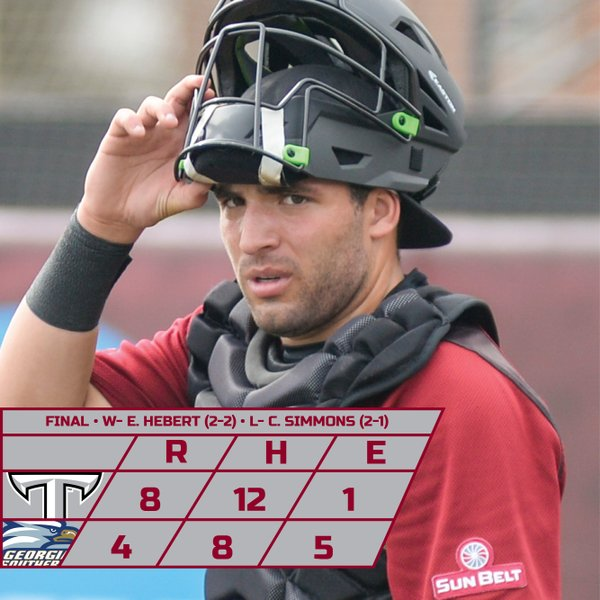

Get access to all of your Trojan Baseball news and highlights here!
We are Trojans one and all...
Update (3/20/2016): Troy head coach Mark Smartt get its his first Sun Belt Conference series win as the head skipper for the Trojans. As they took the rubber match of the series with Georgia Southern University in Statesboro, Ga by a score of 8 to 4. The Trojans won the series opener on Friday night by a score of 2-1, former Troy closer Marc Skinner of Smiths Station High School gave up a lead off double, struck out the next guy. But a walk to the next hitter made Coach Smartt go to the current Trojan closer Corey Childress who finished the game and record the save for the Trojans in the victory. The Trojans lost game two 0-7 to the Eagles. In the finale victory the Trojans were helped by several errors made by the Eagles second baseman.
Update (3/13/2016): The Trojans are having a rough time as of late only winning two of there last seven ball games, a 10 to nothing victory at hated in-state rival Jacksonville State, Whup Jax St, and a win in the second game of the Sun Belt Conference opener against the number 16 nationally ranked Universtiy Louisana at Lafayette by a score of 4-1. But the Trojans lose the series by losing the opening game and rubber match of the series. Troy's pitching wasn't bad at all, but combined with the bats not producing as they should. However; the loss of Matt Sanders due to an ankle injury is a big blow to the trojans and they haven't been as consistent prior to his injury.
Update (3/4/2016): In Pensocola, Florida the Trojans begin play in the Cox Diamond Invitational at Blue Wahoo's Stadium the home of the Pensocola Blue Wahoo's, a double A farm hand of the Cincinnati Reds. The Trojans will play three games over the weekend against the three other teams, Auburn University, Southern Mississippi University and Michagin State University. Troy University sponsered the first night of the Invitational was called Troy night at Blue Wahoo's Stadium, while doing this the University rented out the deck in the outfield for Prospective students and prospective student-athletes, also having numerous numebr of Troy University recruiters on hand to talk to people about the university. The Trojans first played in-state rival Auburn University and the Trojans won 4-3 in eleven innings, on a rbi hit by the Sophmore Matt Sanders of Bob Jones High School.
Update (3/1/2016): Thank You fans for coming out and supporting the Trojans in there big midweek showed down the Alabama Crimson Tide. Your support led to a record breaking crowd at Riddle-Pace Field with an attendance of 3,243 people in the stadium with several several more out in left field cheering on the Trojans.